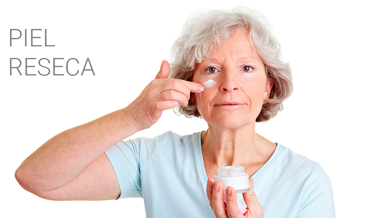

La piel reseca es uno de los malestares más comunes para las personas que viven con diabetes. Esto se debe a que los altos niveles de glucosa provocan deshidratación, resequedad y picazón.
¿Que debo hacer?
1. Controla tu glucosa. Los niveles de glucosa deben estar entre 70 a 100 mg/dl en ayuno y menos de 140 md/dl dos horas después de comer.
2. Mantenla limpia. Jabón libre de colorantes y perfumes son suficientes para conservarla sin suciedad.
3. Seca cuidadosamente. Revisa y retira la humedad con una toalla. Pon especial interés en todos los pliegues de las manos, codos o dedos y entre las piernas.
4. Aplica crema. Después de bañarte úntate una crema humectante o hidratante para evitar resequedad y comezón.
5. Evita rascarte o tallarte. Estas dos acciones pueden llegar provocar heridas o rasguños.
6. Ante la presencia de manchas o resequedad excesiva en la piel, acude con un dermatólogo para obtener un diagnóstico oportuno.
Escribe un comentario...